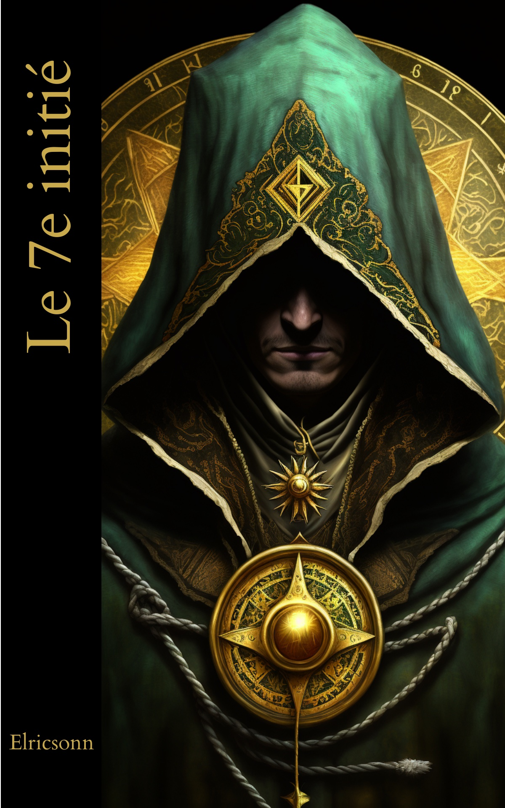

Le Diable Rouge
Un dialogue entre Mazarin et Colbert circule sur les réseaux sociaux comme un document historique. Mais qu'en est-il vraiment ? Analyse d'un sophisme moderne.
Lire la suite →Préférer l'intelligence et la réflexion à la désinformation.
Lire les articlesUn dialogue entre Mazarin et Colbert circule sur les réseaux sociaux comme un document historique. Mais qu'en est-il vraiment ? Analyse d'un sophisme moderne.
Lire la suite →Découvrez l'esprit de ce blog : un espace de réflexion rationnel et intelligent, loin des polémiques, où l'intelligence et la spiritualité cohabitent.
Lire la suite →
« En l'espace d'une nuit, leur vie basculera à tout jamais. »
Cinq amis passionnés de jeux de rôle sont entraînés dans une enquête périlleuse après une course-poursuite nocturne. De la Côte d'Azur à Bâle, du Pas-de-Calais aux Georgia Guidestones, ils affrontent des forces obscures pour démêler des secrets ancestraux qui menacent l'humanité. Là où la réflexion du blog rejoint la fiction initiatique.
Découvrir le roman →